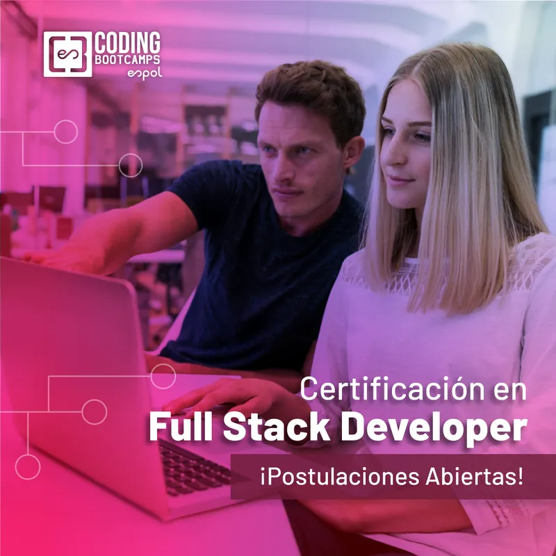
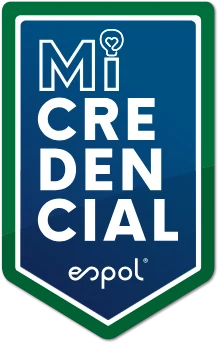
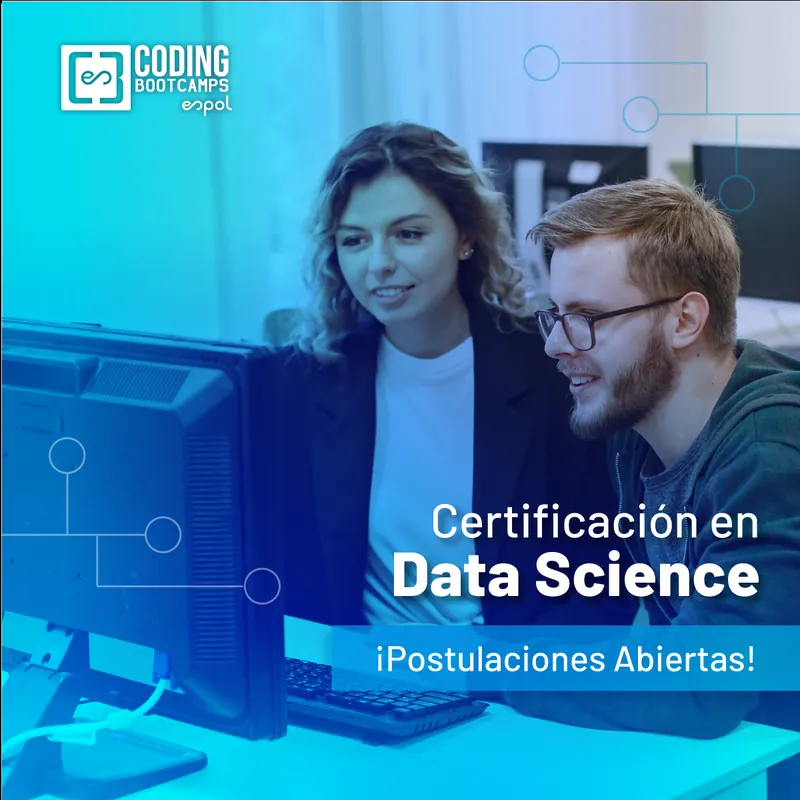

Elige tu ruta hacia la industria tech
Tres programas intensivos de ESPOL con IA aplicada, proyectos reales e instructores de la industria. Elige uno para ver todo el detalle.
Full Stack Development + Applied AI Tools
Programa intensivo para convertirte en desarrollador web, de la mano de profesionales con amplia experiencia en transformación digital en la industria y la academia. Aprende a programar, construye ideas y despliégalas.
- semanas
- 32
- módulos
- 9
- horas
- 300+
- inversión
- USD 2.800

- Interfaces y backends. Construye interfaces modernas, responsivas y accesibles, y conéctalas con APIs y arquitecturas backend robustas y escalables.
- IA en todo el stack. Consume modelos de IA generativa, crea asistentes y agentes inteligentes, y usa herramientas de desarrollo asistido por IA.
- Frameworks de la industria. HTML, CSS, JavaScript y React en el frontend; Django y Node con Express en el backend.
- Código de calidad. Buenas prácticas de diseño web y desarrollo con instructores expertos de la industria.
9 módulos, de cero a proyecto real
Cada módulo combina clases, laboratorio y un entregable para tu portafolio.
- AI Frontend Engineer
- M1
Web Foundations & Agentic Coding
- M2
UX/UI with AI & Design Systems
- M3
Modern Frameworks & Frontend Architecture
- M4
AI Integration & Cloud Deployment
- AI Backend Engineer
- M5
Databases: SQL and Query Optimization
- M6
Backend 101: MERN
- M7
Backend Pro: Models & Tools
- M8
Cloud Computing Architecture for Web Applications
- M9
Quality Assurance
Tu semana
| Día | Hora | Modalidad |
|---|---|---|
| Lunes | 19h00 – 20h30 | Revisión de código |
| Martes | 19h00 – 21h00 | Clase virtual |
| Miércoles | 19h00 – 20h30 | Revisión de código |
| Jueves | 19h00 – 21h00 | Clase virtual |
| Sábado | 09h00 – 12h00 | Clase presencial |
Qué incluye
- 9 módulos dictados por expertos de la industria y la academia.
- Más de 300 horas de instrucción y tutoría.
- Horas de consulta semanales con instructores y ayudantes.
- Laboratorios con plataformas listas para tus proyectos web.
- Portafolio en GitHub que certifica tu experiencia.
- Proyectos con necesidades reales del mercado, en equipo.
- Simulación de entrevistas y asesoría laboral.
- Conexión con la industria en eventos de presentación de proyectos.
- JavaScript
- React
- Node.js
- Django
- MongoDB
- PostgreSQL
- GitHub Actions
- ChatGPT

Macro Credencial ESPOL
Certifica tu formación integral en desarrollo frontend, backend, UX y tecnologías de IA. Además, el contenido cubre lo necesario para certificaciones internacionales:
Google UX Design CertificateAWS Certified Cloud PractitionerGitHub ActionsAprende con quienes lo hacen todos los días
7 instructores de la academia y la industria
Product Manager en Jelou, enfocado en software, usabilidad y estrategia de producto.
Enterprise Architect, Computer Science Engineer, Data Engineer y Cloud Computing Consultant, con experiencia en soluciones de Deep Learning, Insurtech y Fintech.
Senior Consultor en North Highland, desarrollador full stack e Ingeniero en Ciencias de la Computación.
Ingeniero en Computación, CTO de Jelou AI y arquitecto de software, enfocado en estrategia de innovación con IA.
Senior Software Developer, con formación en Computer Science (BSc).
Profesional de TI y QA Automation Tester con certificación ISTQB, con experiencia en ingeniería de software, desarrollo y ciencia de datos.
Salesforce Developer y React Developer, Ingeniero en Ciencias de la Computación.
Así te inscribes
- Entrevista telefónica con un gestor comercial.
- Comprobante de pago: envía el depósito o paga con el link de pago.
- Propedéutico: curso de nivelación si no tienes experiencia en programación.
- Inicio de clases con el primer módulo core.
Paga con un plan de pagos a lo largo del programa. Pregunta por descuentos y financiamiento.
Quiero inscribirme ¿Dudas? Escríbenos por WhatsAppData Science + Applied AI Tools
Programa intensivo para trabajar en ciencia de datos: implementa flujos de analítica, construye visualizaciones efectivas, despliega soluciones en la nube y desarrolla modelos con inteligencia artificial para apoyar la toma de decisiones.
- semanas
- 26
- módulos
- M0+8
- horas
- 200+
- inversión
- USD 3.200

- Alta demanda. Oportunidades de trabajo en varios sectores de la industria.
- Salario competitivo. Atractivos paquetes de compensación en un campo en crecimiento.
- Habilidades versátiles. Aplicables en diversas industrias para resolver problemas complejos con enfoques analíticos.
- Colaboración. Trabajo interdisciplinario que amplía tu red de contactos.
M0 + 8 módulos, de cero a proyecto real
Cada módulo combina clases, laboratorio y un entregable para tu portafolio.
- M0
Python and Computational Thinking
Python desde cero y pensamiento computacional. De aprobación obligatoria.
- M1
Business Intelligence
Formula las preguntas correctas para los problemas de la industria.
- M2
Databases: SQL and Query Optimization
Consulta y organiza datos con SQL, y optimiza tus consultas.
- M3
Python for Data Science and Statistics
Explora datos con Python e interpreta resultados con estadística aplicada.
- M4
Time Series and Intro to Machine Learning
Identifica patrones en el tiempo y anticipa tendencias.
- M5
Machine Learning and Predictions
Modelos de aprendizaje de máquina en Python para cada caso de uso.
- M6
Data Visualization & Storytelling
Dashboards en Google Data Studio y Power BI que cuentan una historia.
- M7
Data Experiments: A/B Testing
Diseño experimental para decidir con evidencia.
- M8
Big Data Analytics
Datos a gran escala con Apache Spark en Python.
Transversales: Business Intelligence, Python for Data Science, Introducción a la IA Generativa, DataViz and Storytelling, y Machine Learning – Data Experimentation.
Tu semana
| Día | Hora | Modalidad |
|---|---|---|
| Lunes | 19h00 – 21h00 | Revisión online |
| Martes | 19h00 – 21h00 | Virtual |
| Miércoles | 19h00 – 21h00 | Revisión online |
| Jueves | 19h00 – 21h00 | Virtual |
| Sábado | 09h00 – 12h00 | Presencial |
Qué incluye
- Módulo introductorio y 8 módulos dictados por expertos.
- Más de 200 horas de instrucción y tutoría.
- Horas de consulta semanales con instructores y ayudantes.
- Laboratorios con plataformas listas para tus proyectos.
- Portafolio en GitHub con tus modelos y visualizaciones.
- Proyectos con necesidades reales del mercado, en equipo.
- Simulación de entrevistas y asesoría laboral.
- Conexión con la industria en eventos de presentación de proyectos.
- Python
- pandas
- scikit-learn
- Jupyter
- Apache Spark
- PostgreSQL
- Gemini
Aprende con quienes lo hacen todos los días
9 instructores de la academia y la industria
Ph. D. en Information Engineering por el Politécnico de Milán. Directora de Coding Bootcamps ESPOL. Experiencia en Yahoo! Labs (Barcelona) y Max Planck Institute (Alemania).
Data Scientist especializado en Inteligencia Artificial y Machine Learning, con experiencia en los sectores retail, bancario y mayorista. Azure & Databricks Specialist.
Profesional en Datos y Machine Learning, con experiencia en retail, banca y sector mayorista. Especialista en soluciones en la nube, enfocada en optimizar procesos, impulsar la innovación y generar resultados reales a través de los datos.
Ingeniero en Ciencias de la Computación, apasionado por la ciencia de datos, el desarrollo de software y la enseñanza. Actualmente es Ingeniero de Datos en el Banco Guayaquil, donde desarrolla procesos automatizados y aplica soluciones tecnológicas para optimizar sistemas y datos.
Doctoral Researcher en CEA-List. Especialista en Machine Learning, con experiencia en análisis de datos y desarrollo de software. Actualmente trabaja en hacer que los sistemas conversacionales con múltiples participantes sean más realistas.
Data Scientist e Ingeniero en Ciencias de la Computación por ESPOL, con experiencia en Business Intelligence, experimentación con datos y visualización de información. Ha trabajado en organizaciones como Google (GSoC), AB InBev y Microsoft Research, y tiene formación en Marketing Digital por la Universidad de Barcelona.
Doctor en Economía especializado en inferencia causal y aprendizaje automático. Trabaja como Modelador Cuantitativo en Capital One, donde desarrolla e implementa modelos econométricos y de aprendizaje automático para pronosticar el riesgo crediticio. Su experiencia incluye pasantías en el Banco Mundial y Google.
Business Intelligence y Data Experimentation; ex Google Summer of Code y ex AB InBev. Ingeniero en Ciencias Computacionales, científico de datos en varios proyectos de investigación y desarrollador web full stack.
PhD en Ciencias de la Computación Aplicada, Data Scientist y Machine Learning Engineer. Científico de Datos en Banco Guayaquil y docente de la FIEC en ESPOL. Magíster en Seguridad Informática Aplicada e Ingeniero en Ciencias Computacionales por ESPOL.
Así te inscribes
- Inscripción en línea: completa el formulario de solicitud.
- Entrevista con un asesor de Coding Bootcamps ESPOL.
- Matriculación: pago inicial, pago completo o plan de pagos.
Pregunta por nuestros descuentos y planes de financiamiento.
Quiero inscribirme ¿Dudas? Escríbenos por WhatsAppBusiness Data Analytics + Applied AI Tools
Obtén una ventaja competitiva con casos de estudio del mundo real: analítica para inferir insights, aprendizaje automático y visualización de datos. Diseñado junto a actores de la industria y el departamento de Ciencias de la Computación de ESPOL.
- módulos core
- 8
- transversales
- 3
- horas
- 200+
- inversión
- USD 2.800
- Mejores salarios. La experiencia en proyectos reales te permite aspirar a mejores salarios.
- Oportunidades laborales. Módulos de habilidades blandas que te preparan para entrevistas.
- Networking. Conexiones valiosas con actores de la industria.
- Programa competitivo. Expertos de la academia y la industria con amplia experiencia.
8 módulos + 3 transversales, de cero a proyecto real
Cada módulo combina clases, laboratorio y un entregable para tu portafolio.
- M0
Python and Computational Thinking
Python desde cero. De aprobación obligatoria.
- M1
Business Intelligence and Storytelling
Con la metodología del caso, formula las preguntas correctas.
- M2
Databases: SQL and Query Optimization
Consultas SQL y principios de gobernanza de datos.
- M3
Python for Business Data Analytics
Data wrangling de la operación de un negocio con Python.
- M4
Data Governance
Gestión, calidad y seguridad de los datos en la empresa.
- M5
Data Visualization
Dashboards y visualizaciones geográficas para la industria local.
- M6
Machine Learning Intro
Modelos predictivos con datos reales de negocio.
- M7
Digital Marketing Analytics
Métricas, SEO, segmentación y el rol de la IA en marketing.
Transversales: fundamentos de Python, SCRUM, AI Tools for Business Intelligence y hojas de cálculo para analítica. Aceleradores de carrera: comunicación asertiva y liderazgo, y Career Services.
Tu semana
| Día | Hora | Modalidad |
|---|---|---|
| Lunes | 19h00 – 21h00 | Virtual |
| Martes | 19h00 – 21h00 | Virtual |
| Miércoles | 19h00 – 21h00 | Virtual |
| Jueves | 19h00 – 21h00 | Virtual |
| Sábado | 09h00 – 12h00 | Presencial |
Los horarios virtuales están sujetos a cambios según la planificación del curso.
Qué incluye
- 8 módulos core y 3 contenidos transversales.
- Más de 200 horas de instrucción y tutoría.
- Horas de consulta semanales con instructores y ayudantes.
- Laboratorios con plataformas listas para tus proyectos.
- Proyectos con necesidades reales del mercado, en equipo.
- Simulación de entrevistas y asesoría laboral.
- Conexión con la industria en eventos de presentación de proyectos.
- Python
- pandas
- PostgreSQL
- Jupyter
- ChatGPT
Aprende con quienes lo hacen todos los días
9 instructores de la academia y la industria
Magíster y especialista de datos en Zerebralab. Experto en resolver problemas comerciales y operacionales con análisis de datos. Ha sido líder de Inteligencia de Negocios en Mall del Sol, especialista de datos en Cervecería Nacional y gerente regional de experimentos y analítica en Rappi.
Senior Data Scientist en AB InBev, con alrededor de 6 años de experiencia en ciencia de datos y análisis para la toma de decisiones estratégicas. Graduada en Computer Science por ESPOL, con reconocimientos como el Mérito a la Investigación y el KDD 2020 Student Registration Award.
Economista por ESPOL, con experiencia como científica de datos senior en el sector bancario. Co-embajadora de WiDS ESPOL 2021 y vicepresidenta del Grupo de Investigación de Tecnologías Web, Móviles y Ciencia de Datos (TAWS) en 2020.
MSc. en Sistemas de Información Geográfica por la Universidad de Salzburg, Austria. Ha trabajado en diversas empresas de geoinformática y se especializa en AWS, Data y BI, desarrollo web y móvil, y GIS.
PhD (c) en Inteligencia Artificial en Bircham University, máster en SCRUM y diplomado en Ciencia de Datos y Desarrollo Gerencial. Gerente de Gobierno de Información y Analítica en Banco Guayaquil.
Ingeniero en Computación y especialista en Ciencia de Datos. Machine Learning Engineer, especializado en modelos de Machine Learning, Big Data y MLOps con Azure Databricks, Docker, Kubernetes, Airflow y LLMs.
Instructor del módulo Databases: SQL and Query Optimization.
Instructora del módulo Digital Marketing Analytics.
Ph. D. en Information Engineering por el Politécnico de Milán. Directora de Coding Bootcamps ESPOL. Experiencia en Yahoo! Labs (Barcelona) y Max Planck Institute (Alemania).
Así te inscribes
- Inscripción: completa el formulario de aplicación.
- Entrevista con el coordinador de admisiones.
- Matriculación: formaliza tu registro y el acuerdo de financiamiento.
Pregunta por nuestros descuentos y planes de financiamiento.
Quiero inscribirme ¿Dudas? Escríbenos por WhatsApp